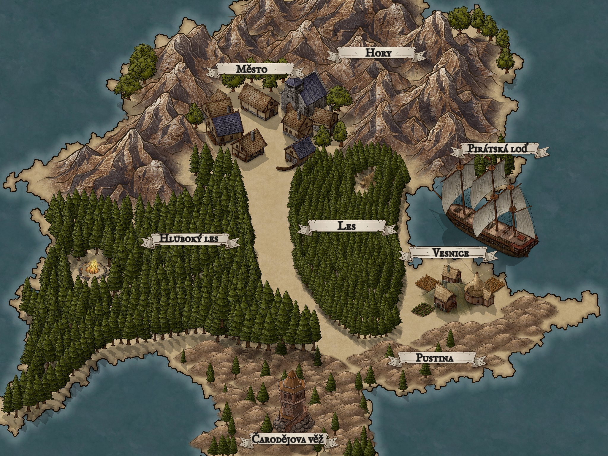

Cílem hry je nalézt cestu k Čarodějově věži, kde čaroděj zloděj ukrývá
všechno ukradené zlato z města kde začínáš, doporučuji si cestou nasbírat
co nejvíce předmětů, mohli by se později hodit, tajemství a mapa k věži
se však ukrývá v jednom z prostorů, kde ji dostaneš výměnou za jiné věci.
nebudu ti ale prozrazovat kde a co pro to musíš udělat, aby sis hru alespoň trochu užil
tato příručka obsahuje mapu, seznam příkazů a návod jak hru spustit.
Děkuji pokud si hru zahraješ.
Autor hry: Štěpán Beran
Hru je mozne spustit po stazeni tohoto archivu jako zip, rozbalit ho do slozky a pote spustit prikazovy radek do ktereho je treba napsat tyto dva prikazy.
cd [cesta do slozky jar]
java --jar cestaZaPokladem.jar
Je mozne, ze vam v cmd vyskoci chyba s nespolupracujicimi verzemi
Javy, pote doporucuji navod tady.
https://www.java.com/en/download/help/update_runtime_settings.html
Je potreba nainstalovat si JDK 19 a podle navodu si ho pridat a restartovat pocitac. Odkaz ke stahnuti: https://www.oracle.com/java/technologies/javase/jdk19-archive-downloads.html

odemkni [nazev mistnosti] se ti odemkne zamčený východ, ale pouze jestli budeš mít klíčnápověda ti vrátí dostupné příkazy přímo ve hře a řekne cíl hryvymen [nazev vymeny] můžeš výměnu spustit pouzij [nazev predmetu]poloz [nazev predmetu]jdi [nazev mistnosti]seber [nazev predmetu]